5 Metody interpolacji
Odtworzenie obliczeń z tego rozdziału wymaga załączenia poniższych pakietów oraz wczytania poniższych danych:
library(sf)
library(stars)
library(gstat)
library(tmap)
library(dismo)
library(fields)
library(geostatbook)
data(punkty)
data(siatka)
data(granica)Przez przejściem do interpolacji geostatystycznych, którymi są poświęcona kolejne rozdziały, warto zdać sobie sprawę, że nie jest to jedyna możliwa droga postępowania do stworzenia estymacji przestrzennych. Można wyróżnić dwie główne grupy modeli przestrzennych - modele deterministyczne (sekcja 5.2 oraz modele statystyczne (sekcja 5.3).
5.1 Tworzenie siatek
Większość metod interpolacji wymaga stworzenia siatki interpolacyjnej (pustego rastra). Istnieją dwa podstawowe rodzaje takich siatek - siatki regularne oraz siatki nieregularne.
5.1.1 Siatki regularne
Siatki regularne mają kształt prostokąta obejmującego cały analizowany obszar.
Określenie granic obszaru można wykonać na podstawie zasięgu danych punktowych za pomocą funkcji st_bbox() z pakietu sf.
st_bbox(punkty)## xmin ymin xmax ymax
## 745592.5 712723.3 756967.8 721238.7Do stworzenia siatki można wykorzystać funkcję st_as_stars().
Tworzy ona nowy obiekt na podstawie obwiedni istniejącego obiektu punktowego oraz zadanej rozdzielczości (rycina 5.1).2
punkty_bbox = st_bbox(punkty)
nowa_siatka = st_as_stars(punkty_bbox,
dx = 500,
dy = 500)
nowa_siatka = st_set_crs(nowa_siatka, "EPSG:2180")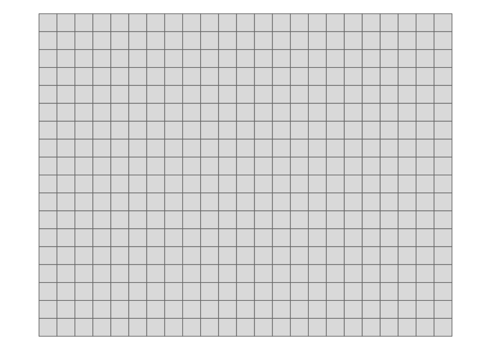
Rycina 5.1: Wizualizacja regularnej siatki z oczkiem o boku 500 na 500 metrów.
5.1.2 Siatki nieregularne
Siatki nieregularne mają zazwyczaj kształt wieloboku obejmującego analizowany obszar. Mogą one powstać, np. w oparciu o wcześniej istniejące granice.
W poniższym przypadku odczytywana jest granica badanego obszaru z pliku w formacie GeoPackage.
Taki obiekt można np. stworzyć za pomocą oprogramowania GIS takiego jak QGIS.
Następnie tworzony jest nowy obiekt nowa_siatka_n poprzez wybranie tylko tych oczek siatki, które znajdują się wewnątrz zadanych granic.
granica = read_sf("dane/granica.gpkg")
nowa_siatka_n = nowa_siatka[granica]Wynik przetworzenia można zobaczyć na rycinie 5.2.
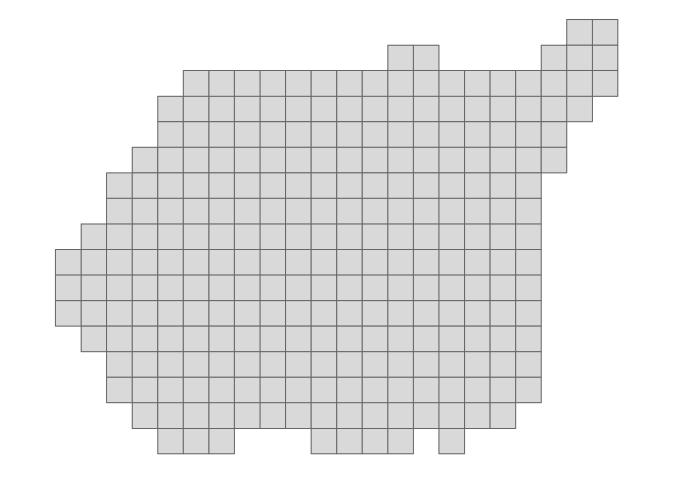
Rycina 5.2: Wizualizacja nieregularnej siatki z oczkiem o boku 500 na 500 metrów.
5.1.3 Siatki - wizualizacja
Sprawdzenie, czy uzyskana siatka oraz dane punktowe się na siebie nakładają można sprawdzić z pomocą pakietu tmap (rycina 5.3).
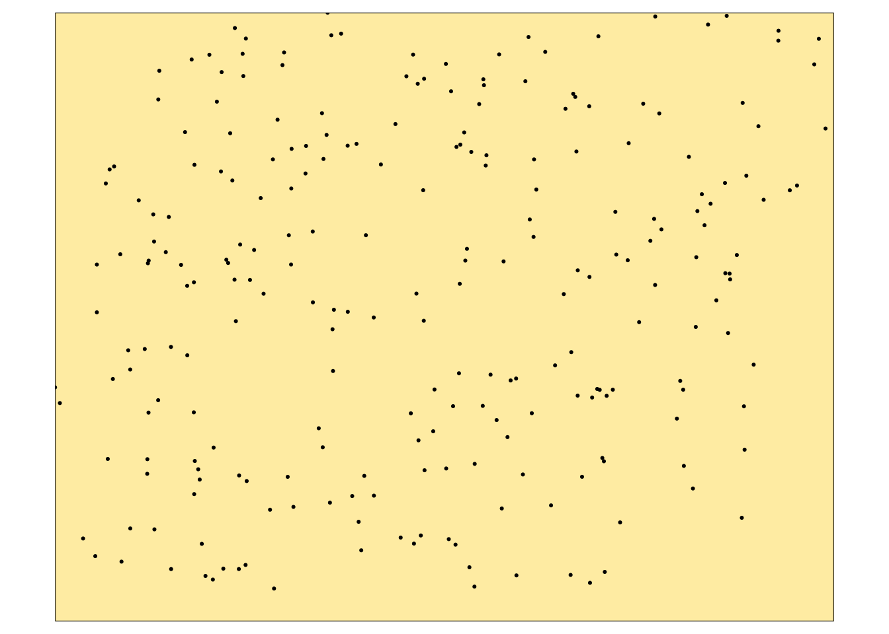
Rycina 5.3: Wizualizacja regularnej siatki z nałożonym położeniem obserwacji punktowych.
5.2 Modele deterministyczne
Modele deterministyczne charakteryzują się tym, że ich parametry są zazwyczaj ustalane w oparciu o funkcję odległości lub powierzchni. W tych modelach brakuje szacunków na temat oceny błędu modelu. Zaletą tych modeli jest ich prostota oraz krótki czas obliczeń. Do modeli deterministycznych należą, między innymi:
- Metoda diagramów Woronoja (ang. Voronoi diagram) (sekcja 5.2.1)
- Metoda średniej ważonej odległością (ang. Inverse Distance Weighted - IDW) (sekcja 5.2.2)
- Funkcje wielomianowe (ang. Polynomials) (sekcja 5.2.3)
- Funkcje sklejane (ang. Splines) (sekcja 5.2.4)
5.2.1 Diagramy Woronoja
Metoda diagramów Woronoja polega na stworzeniu nieregularnych poligonów na podstawie analizowanych punktów, a następnie wpisaniu w każdy poligon wartości odpowiadającego mu punktu.
Na poniższym przykładzie ta metoda stosowana jest z użyciem funkcji voronoi() z pakietu dismo (rycina 5.4).
voronoi_interp = voronoi(st_coordinates(punkty))
voronoi_interp = st_as_sf(voronoi_interp)
voronoi_interp$temp = punkty$temp
tm_shape(voronoi_interp) +
tm_polygons(col = "temp", n = 10, palette = "-Spectral",
title = "Diagramy Woronoja:\ntemperatura") +
tm_layout(legend.outside = TRUE)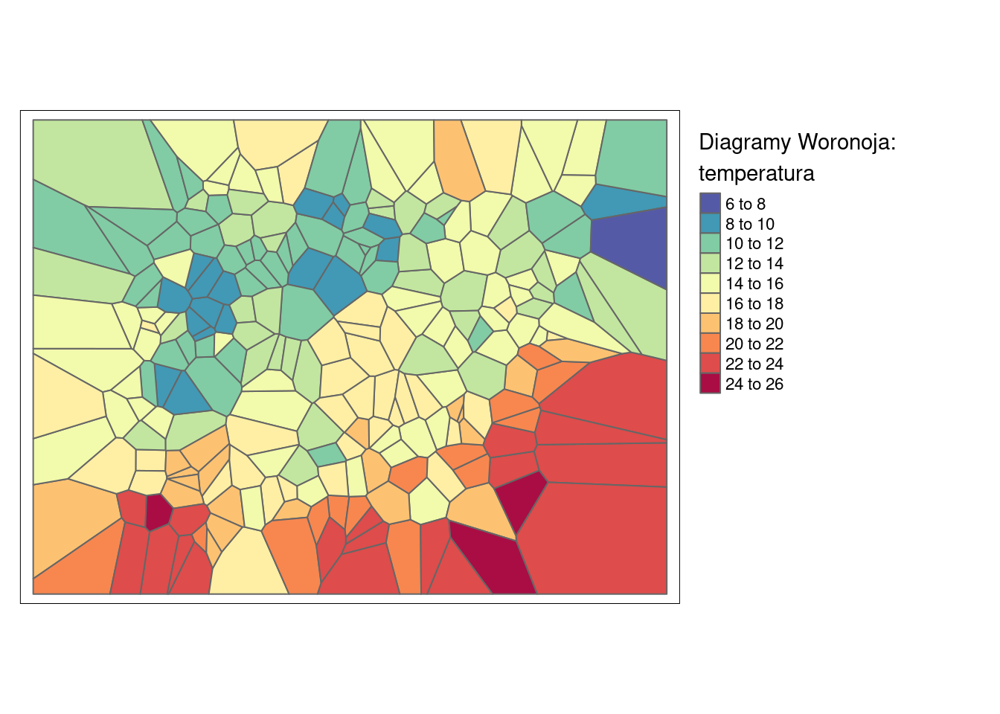
Rycina 5.4: Interpolacja zmiennej temp używając metody diagramów Woronoja.
5.2.2 IDW
Metoda średniej ważonej odległością (IDW) wylicza wartość dla każdej komórki na podstawie wartości punktów obokległych ważonych odwrotnością ich odległości.
W efekcie, czym bardziej jest punkt oddalony, tym mniejszy jest jego wpływ na interpolowaną wartość.
Wagę punktów ustala się z użyciem argumentu wykładnika potęgowego (idp, ang. inverse distance weighting power) (rycina 5.6).
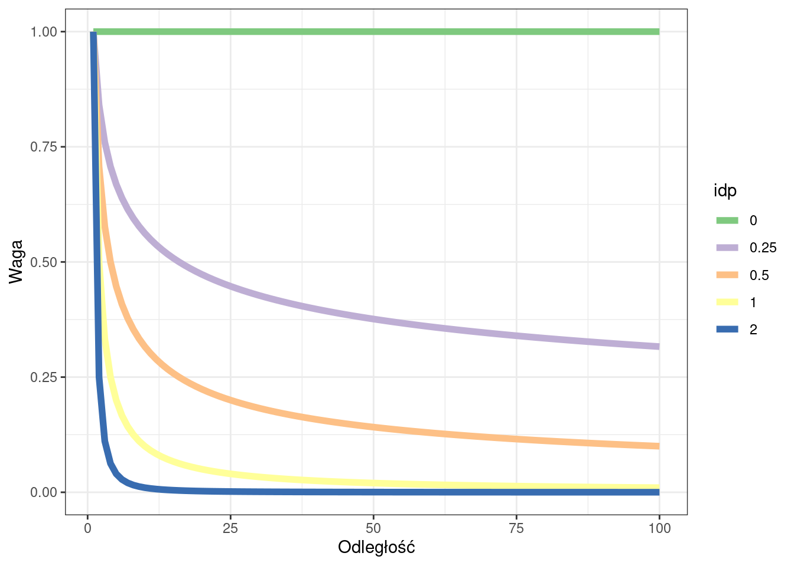
Rycina 5.5: Relacja pomiędzy argumentem wykładnika potęgowego a wpływem wartości punktów wraz z odległością.
W pakiecie gstat istnieje do tego celu funkcja idw(), która przyjmuje analizowaną cechę (temp~1), zbiór punktowy, siatkę, oraz wartość wykładnika potęgowego (argument idp) (rycina 5.6).
idw_interp = idw(temp ~ 1, locations = punkty,
newdata = siatka, idp = 2)## [inverse distance weighted interpolation]
tm_shape(idw_interp) +
tm_raster(col = "var1.pred", n = 10, palette = "-Spectral",
style = "cont", title = "IDW") +
tm_layout(legend.outside = TRUE)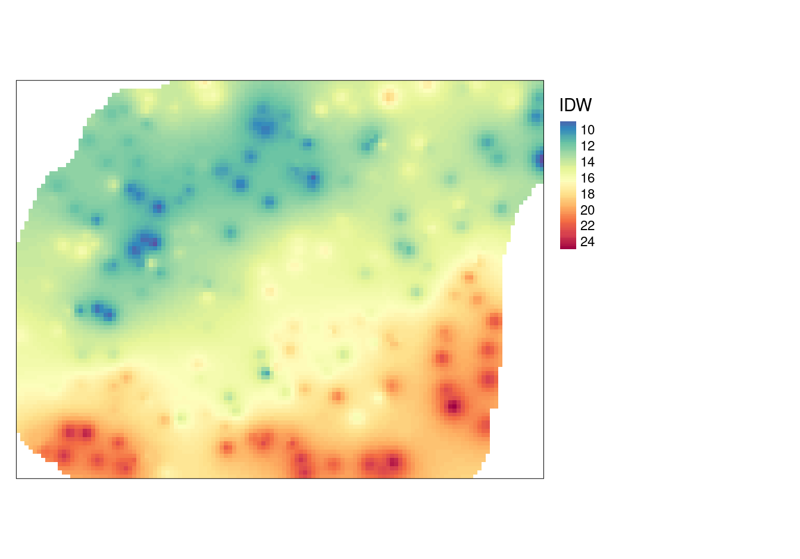
Rycina 5.6: Interpolacja zmiennej temp używając metody średniej ważonej odległością (IDW).
5.2.3 Funkcje wielomianowe
Stosowanie funkcji wielomianowych w R może odbyć się z wykorzystaniem funkcji gstat() z pakietu gstat.
Wymaga ona podania trzech argumentów: formula określającego naszą analizowaną cechę (temp~1 mówi, że chcemy interpolować wartość temperatury zależnej od samej siebie), data określający analizowany zbiór danych, oraz degree określającą stopień wielomianu.
Następnie funkcja predict() przenosi nowe wartości na wcześniej stworzoną siatkę.
Porównanie wielomianów pierwszego, drugiego i trzeciego stopnia można znaleźć na rycinach 5.7, 5.8 i 5.9.
# wielomian 1 stopnia
wielomian_1 = gstat(formula = temp ~ 1, locations = punkty,
degree = 1)
wielomian_1_pred = predict(wielomian_1, newdata = siatka)## [ordinary or weighted least squares prediction]
tm_shape(wielomian_1_pred) +
tm_raster(col = "var1.pred", n = 10, palette = "-Spectral",
style = "cont", title = "Wielomian pierwszego stopnia") +
tm_layout(legend.outside = TRUE)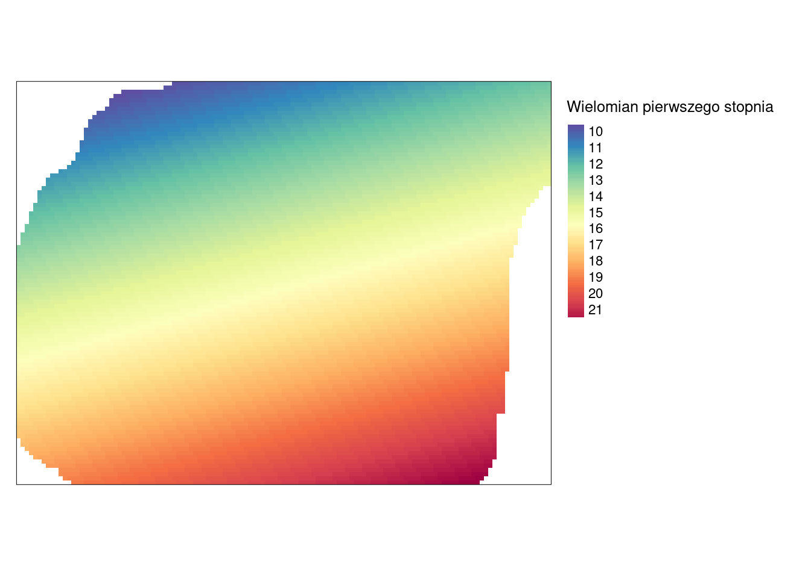
Rycina 5.7: Powierzchnia trendu zmiennej temp określona używając wielomianu pierwszego stopnia.
# wielomian 2 stopnia
wielomian_2 = gstat(formula = temp ~ 1, locations = punkty,
degree = 2)
wielomian_2_pred = predict(wielomian_2, newdata = siatka)## [ordinary or weighted least squares prediction]
tm_shape(wielomian_2_pred) +
tm_raster(col = "var1.pred", n = 10, palette = "-Spectral",
style = "cont", title = "Wielomian drugiego stopnia") +
tm_layout(legend.outside = TRUE)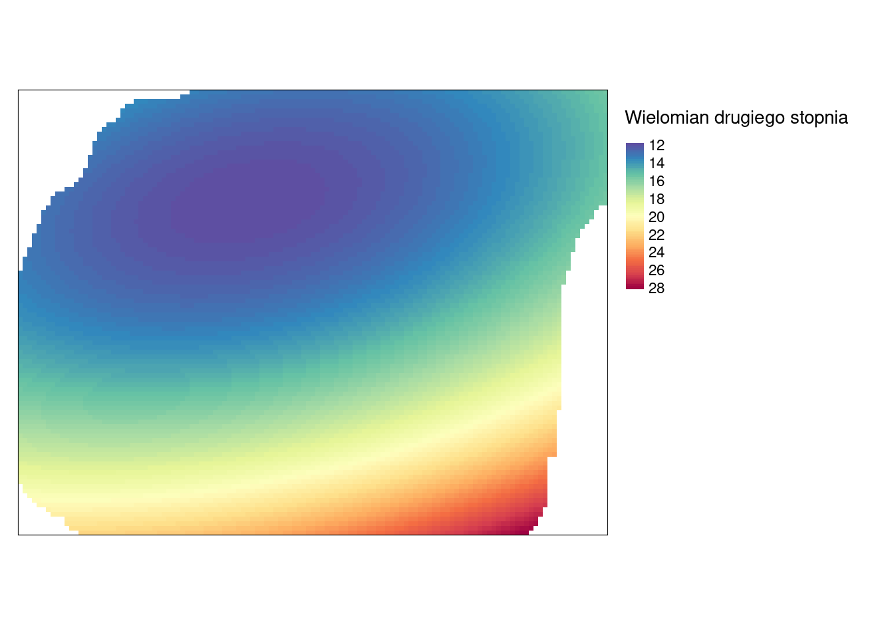
Rycina 5.8: Powierzchnia trendu zmiennej temp określona używając wielomianu drugiego stopnia.
# wielomian 3 stopnia
wielomian_3 = gstat(formula = temp ~ 1, locations = punkty,
degree = 3)
wielomian_3_pred = predict(wielomian_3, newdata = siatka)## [ordinary or weighted least squares prediction]
tm_shape(wielomian_3_pred) +
tm_raster(col = "var1.pred", n = 10, palette = "-Spectral",
style = "cont", title = "Wielomian trzeciego stopnia") +
tm_layout(legend.outside = TRUE)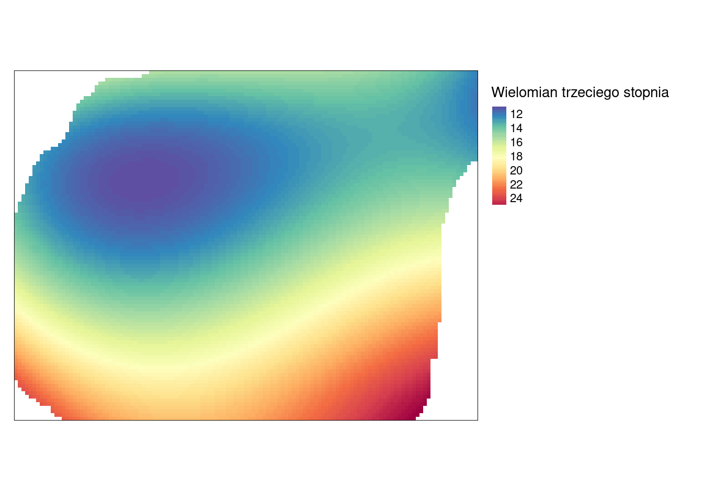
Rycina 5.9: Powierzchnia trendu zmiennej temp określona używając wielomianu trzeciego stopnia.
5.2.4 Funkcje sklejane
Interpolacja z użyciem funkcji sklejanych (funkcja Tps() z pakietu fields) dopasowuje krzywą powierzchnię do wartości analizowanych punktów (rycina 5.10).
tps = Tps(st_coordinates(punkty), punkty$temp)
siatka$tps_pred = predict(tps, st_coordinates(siatka))
siatka$tps_pred[is.na(siatka$X2)] = NA
tm_shape(siatka) +
tm_raster(col = "tps_pred", n = 10, palette = "-Spectral",
style = "cont", title = "Funkcje sklejane") +
tm_layout(legend.outside = TRUE)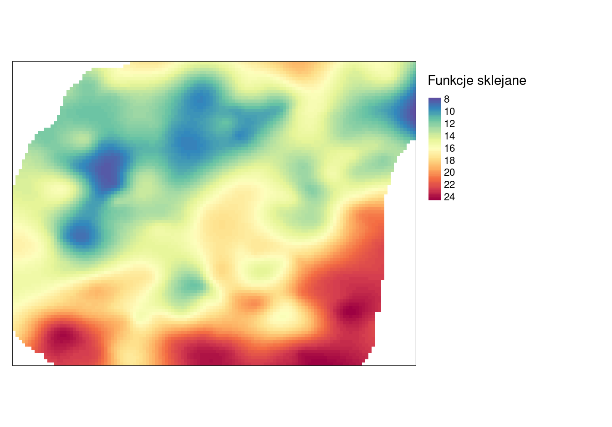
Rycina 5.10: Interpolacja zmiennej temp z użyciem funkcji sklejanych.
5.2.5 Porównanie modeli deterministycznych
Na rycinie 5.11 można wizualnie porównać wyniki uzyskane czterema metodami deterministycznymi.
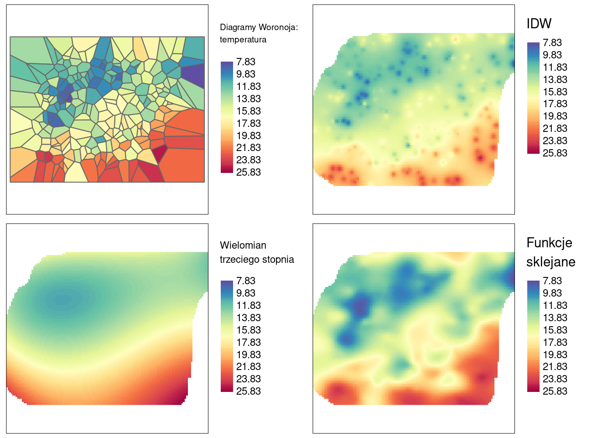
Rycina 5.11: Porównanie czterech metod interpolacji dla zmiennej temp używając jednolitej skali wartości.
5.3 Modele statystyczne
Modele statystyczne charakteryzują się tym, że ich parametry określane są w oparciu o teorię prawdopodobieństwa, dodatkowo wynik estymacji zawiera także oszacowanie błędu. Te metody jednak zazwyczaj wymagają większych zasobów sprzętowych. Do modeli statystycznych należą, między innymi:
- Kriging
- Modele regresyjne
- Modele bayesowskie
- Modele hybrydowe
W kolejnych rozdziałach znajduje się omówienie kilku podstawowych typów pierwszej z tych metod - krigingu.
5.4 Zadania
- Stwórz siatkę interpolacyjną o rozdzielczości 200 metrów dla obszaru Suwalskiego Parku Krajobrazowego.
- Korzystając z danych
punktywykonaj interpolację zmiennejsrtmużywając:
- Poligonów Woronoja
- Metody IDW
- Funkcji wielomianowych
- Funkcji sklejanych
- Porównaj uzyskane wyniki poprzez ich wizualizację. Czym różnią się powyższe metody?
- Wykonaj interpolację zmiennej
tempmetodą IDW sprawdzając różne parametry argumentuidp. W jaki sposób wpływa on na uzyskaną interpolację?